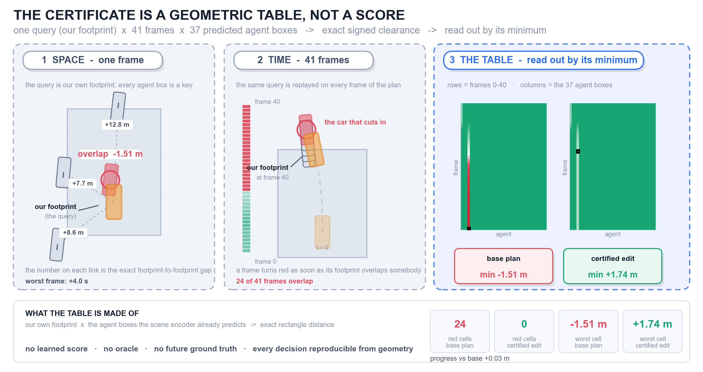
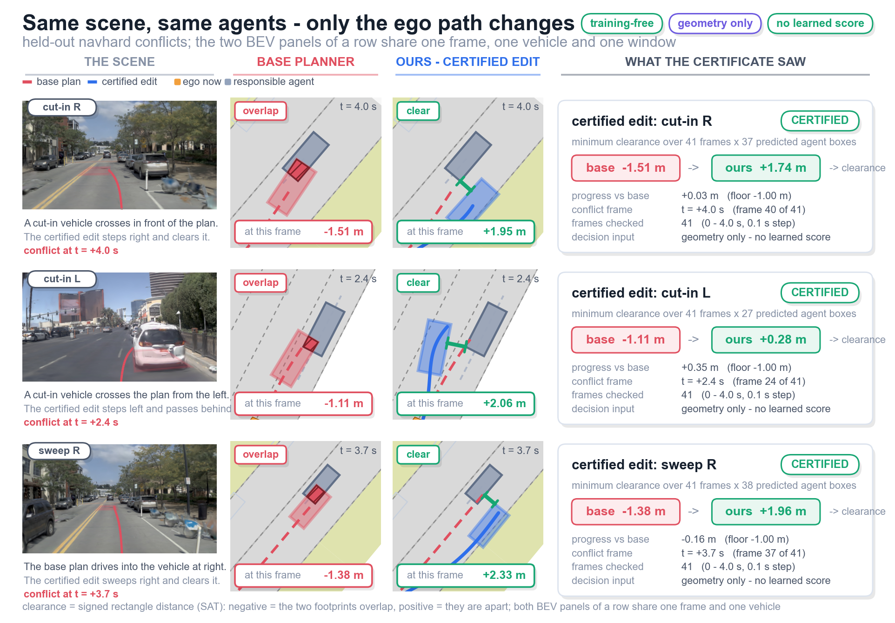
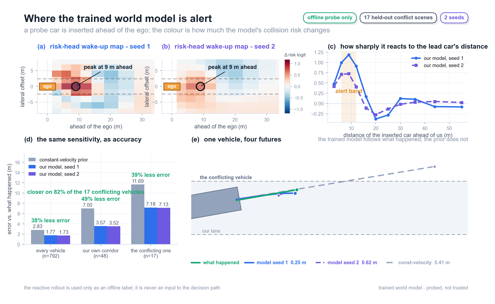
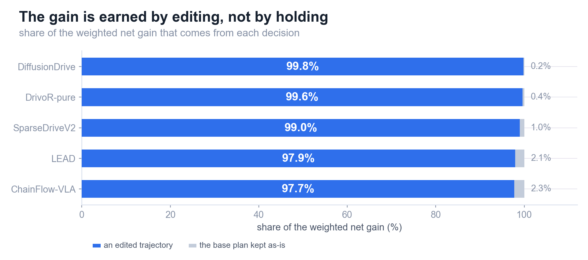
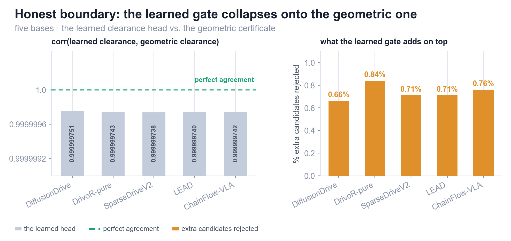
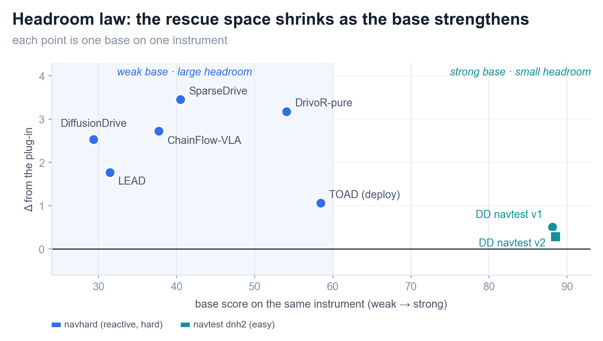

No re-scoring, no retraining: edit one trajectory inside the planner's own control family,
verify it frame by frame with an exact geometric certificate, and revert whenever the edit fails.
Five non-TTO bases all improve significantly; on the held-out split, 14 rescues and 0 harms.
The certificate reads geometry and map only — never the answer key, never future ground truth, never the official score
The conclusion first: positive, explainable, revertible
A frozen planner emits one trajectory. We do not re-score its candidates and we add no scoring head.
Instead we search the planner's own control family (hold / brake / accel / cut-in left-right / sweep left-right)
for an alternative trajectory, and accept it only when an exact geometric certificate proves that the alternative
keeps clearance over the whole prediction horizon without sacrificing progress.
If the certificate fails, the base trajectory is returned unchanged.
—
Cross-base EPDMS gain
five non-TTO bases, every 95% CI lower bound above 0
—
Harms on the held-out split
conflicts rescued on the same tokens, with zero harm
—
navtest net gain, both instruments
v1 non-reactive and v2 reactive, each against its own baseline
—
Repair attribution accuracy
share of changed tokens traced to the correct conflict cause
In one sentence: this is a certificate-gated offline trajectory post-processor — every decision rests on
geometry (separation / penetration / drivable area / progress floor); pass and the trajectory changes, fail and it reverts,
so gains are attributable token by token and failures are revertible token by token.
Every number on this page is generated from the on-disk ledgers; none is hand-typed.
Motivation
Why repair a plan after planning is done?
A deployed planner is frozen: it emits one trajectory without looking ahead, and in cut-in
scenarios that trajectory drives straight into the predicted box of another agent. Retraining the planner, training a
scorer, or peeking at the evaluation key — all three routes are blocked by the deployment contract. What we add is
not a score but a proof: a local edit inside the planner's own control family, rolled forward frame by frame
against the planner's own predicted agent futures, committed only when every signed clearance is non-negative and
progress is preserved; otherwise the base plan is returned unchanged.
Fig. 1 · Why the obvious fixes fail, and what we add instead.Left (red): on a real
held-out cut-in scene the frozen planner's committed path penetrates the predicted agent box (hatched overlap,
worst clearance −1.51 m); the three tempting fixes each break the deployment contract — (a) retraining the planner
spends months of data and GPUs on a few bad scenes, (b) a learned judge is a reward, not a proof, and its blind
spots get over-optimized, (c) reading the evaluation key (future ground truth / official score) is forbidden at
decision time. Right (green): propose → prove → commit. A candidate-conditioned world model re-imagines the
agents for each of eight local edits of the same plan over 41 frames and 37 agents; the certificate commits an edit
only if F (no penetration in any frame), S (a signed gap to every agent at every frame) and P
(progress within 1 m of base) all hold — exact geometry, no learned score. The base plan is candidate 0, so the gate
can always answer 'keep base'. Every commit explains itself: agent → penetration → edit, −1.51 → +1.74 m at
+0.03 m progress. What we add is a proof, not a score.
Mechanism
One pipeline, three sections
The figure below is the complete pipeline in three sections. Left: the frozen planner
(stitched camera input → encoders and BEV features → the DiffusionDrive diffusion head, emitting one trajectory with no
lookahead). Middle: our added certificate-gated repair (training-free: the planner's own eight local edits
form the candidate library, a candidate-conditioned world model predicts agent reactions, and the exact geometric
certificate dispositions each candidate). Right: the output (the committed trajectory).
Every part does one job, and every part's output can be inspected on its own.
Fig. 2 · Mechanism pipeline. Read three sections left to right. ① Frozen planner: the camera
input is the stitched left|front|right crop; image / lidar / status encoders and BEV features feed DiffusionDrive's
plan-anchor diffusion head, which emits one trajectory with no lookahead. In this scene the base trajectory drives
straight into the predicted cut-in vehicle (red dashed, star), gap −1.51 m. ② World4Refiner (training-free, geometry
only): the planner's own eight local edits form the candidate library (two pass, ticked); a candidate-conditioned
world model predicts how agents react (41 frames × 37 agents); the exact geometric certificate dispositions each
candidate — F (zero penetration over 41 frames), S (separation from every agent), P (progress no worse than base −1 m) —
together with the official channels DAC / DDC / LK / HC / NC / TTC. The two insets in the certificate panel draw the
tightest pair directly: ego (red) overlapping the agent box (violet) by −1.51 m under the base, separated by +1.74 m
after the committed edit. The polyline at lower left is the per-frame minimum clearance: the base crosses zero, the
certified edit never does. ③ Output: committed trajectory (blue) against base (red dashed); the gap goes from
−1.51 m to +1.74 m while progress even exceeds the base by 0.03 m. The official scorer prices the result offline only
and never enters the decision path.
Fig. 3 · The certificate gate is geometry, not a score. No trained scoring, no reward model —
the whole decision chain has three steps. (a) One reading: treat the ego rectangle and a predicted agent box as
two rectangles and compute their signed distance with the separating-axis theorem (SAT) — a thin green line means
separated, red hatching means overlapping, and the reading is the gap in metres. (b) The whole grid: each
candidate reads 41 frames × 37 agent boxes = 1517 readings; the horizontal axis is the 41 frames (0.1 s per cell),
red = overlap, green = separation. The base row turns red through the conflict (worst −1.51 m, 24/41 frames penetrating)
while the cut-in R row has no red cell at all (worst +1.74 m); the other candidates have red stretches of their own.
(c) The decision gate: on top of the geometric readings sit three hard constraints — F (zero penetration
over 41 frames), S (separation from every agent), P (progress no worse than base −1 m). Only a candidate
passing all three may replace the base; otherwise the base is returned unchanged. The two numbers in the bottom bar are
this scene's final comparison: base 24/41 frames penetrating, worst −1.51 m; certified edit 0/41, worst
+1.74 m.

Fig. 4 · The certificate is a geometric table, not a score.1 Space: at one frame the ego rectangle is the query and each predicted agent box a key; the number on the edge
is the exact rectangle distance between them, signed — negative means the two rectangles overlap. 2 Time: the
same query replayed over all 41 frames; a frame turns red if it overlaps any agent (24 such frames for the base here).
3 Full table: rows are frames, columns are the 37 predicted agent boxes, and the reading is the table minimum.
The base table has 24 red cells and a worst pair of −1.51 m, so it is rejected; the certified edit's table has no red
cell and a worst pair of +1.74 m, so it is committed. Every cell is an exact distance between our own rectangle and an
agent box the scene encoder already predicted: no learned score, no oracle, no future ground truth.
Fig. 5 · One decision, nine counterfactual futures.(a) All nine candidates drawn at once on
the real map: base red dashed, certified edit blue, other clearance-passing edits green, rejected grey; rectangles and
the star mark ego and the responsible agent at the base's worst frame. (b) Certificate matrix: one row per future,
each cell the minimum signed clearance over all 37 agents at that frame — red overlap, green separation. The base
row turns red through the conflict (24/41 frames); the certified row never does. Note the two "all green yet fail" rows:
hold and brake 0.5 avoid every agent but fall more than 1 m behind the base in progress — the gate demands clearance
and progress together. (c) The committed row is attributable: which edit, which agent at which frame, clearance
flipping from −1.51 to +1.74 m, progress +0.03 m over base; 56/56 committed edits attribute correctly on held-out.
(d) Deployment contract: the gate reads only ego/agent rectangles, the planner's own predictions, and drivable-area
boundaries; it never reads the official scorer, future ground truth, a learned scoring head, or stage-2 training
weights — the official scorer prices the result offline, after the decision.
Part 1
Frozen planner
No training, no fine-tuning. The base trajectory and its own scene predictions (agent futures) are taken as input,
so the method consumes no training budget.
Part 2
Trajectory editor
Parametric edits inside the planner's control family: hold, brake, accel, cut-in left / right, sweep left / right.
We edit controls; we do not regenerate a trajectory.
Part 3
Geometric certificate
Exact separation / penetration between the ego rectangle and every agent rectangle via SAT, checked at all 41
frames, plus two hard constraints: drivable area and progress.
Part 4
Selection and fallback
An edit is accepted only if it keeps clearance throughout and preserves progress; otherwise the base is returned
unchanged. Gains therefore never come from trading something else away.
Edit objective
The edit operator acts on the controls emitted by the planner; the candidate set is the control family
itself, so there is no room to "swap in a new trajectory".
Geometric certificate
SAT yields separation and penetration together (signed). The certificate requires
g_t ≥ 0 at every instant against every agent.
Selection rule
The certificate is a hard gate, not a weighted score; failure means fallback — there is no "partial acceptance".
Certificate checklist
Non-negative clearance: 41 instants × all agents, SAT clearance ≥ 0 everywhere;
Zero penetration: penetration must be 0 at every instant — "a little less" is not accepted;
Stay drivable: inside lane / road polygons throughout, no sidewalk, no curb crossing;
Same direction: never enter opposing traffic (heading angle beyond 60° is a violation);
Progress: terminal displacement no worse than the base (1 m tolerance);
Revertible: edits stay inside the planner's control family; any single failure reverts the whole edit.
This navhard evaluation funnel
No item on this list depends on the official score, future ground truth, or training weights,
so the whole checklist can be re-verified independently at deployment.
all checks pass ⇒ commit the edit
Any single failure ⇒ the edit is void and the trajectory reverts to base; among changed tokens,
harm is decided directly by this fallback mechanism.
Interactive demo
Scrub the timeline and watch one trajectory get repaired
Real scenes below (real map + real front-camera frames + the planner's own agent predictions).
Playback has two phases: t < 0 replays the real pre-decision camera observations (2 Hz, interpolated playback;
the filmstrip below is clickable); t ≥ 0 enters the geometry replay — the left screen renders the planner's cached
prediction through a pinhole camera: the red translucent box is the base ghost, which drives into the cut-in agent
at the conflict frame; our own vehicle is the camera, and the certified edit keeps clearance throughout. The right screen
is a heading-up bird's-eye view: the fan of eight candidate edits, agent prediction trails, and the blue line the
certificate selected. The replay is not observation, and the screen says so at all times.
Loading…
front camera · real observation
candidate fan · prediction replay (heading up)
t = −2.0 s
orange box = ego (certified edit); red box = conflict agent; star = tightest frame
Clearance over timeminimum clearance from base and edit to the conflict agent; below the 0 line = penetration
base clearanceedit clearancered band = intervals where the base penetrates but the edit does not; vertical line = current playback time
Three figures answer three questions: what changed (comparison), what it looks like in a real scene
(case), and how many conflict shapes are covered (gallery).
Fig. 6 · What changed. Two held-out conflicts, five parts per row: the real scene (front + left
camera), the base planner (red dashed trajectory overlapping the cut-in agent, negative gap), World4Refiner (blue solid
trajectory pulling the gap back positive), the clearance bars (left/right split, negative = the two vehicles overlap),
and the actions the certificate actually allowed (lateral shift, progress delta vs base, collision or not).
The two cases go from −1.51 m → +1.74 m and −1.38 m → +1.96 m.
Fig. 7 · One decision, end to end. Top row, three steps: ① scene (real front camera + base BEV
trajectory) → ② diagnosis (cut-in agent #3 located, base net clearance −1.51 m, first contact at 1.7 s) →
③ eight candidate edits, each unrolled in its own predicted world, box colour = verdict (red = negative clearance,
amber = insufficient progress, green = certificate pass). Bottom row, two steps: ④ the certificate dispositions each
candidate (clearance ≥ 0, safe, progress preserved); cut-in R is selected here, and the four candidates not listed in
the table also failed the safety check (6 of 8 edits rejected); ⑤ final output (net clearance +1.74 m, progress
+0.03 m). The summary bar at lower left writes the verdict in one place: clearance flips from −1.51 m to +1.74 m,
progress +0.03 m over base (certificate floor −1.00 m); had no candidate passed, the base trajectory would have been
kept unchanged — only geometric quantities participate, no learned score.

Fig. 8 · Case gallery. Different conflict shapes (opposing cut-in, same-direction braking,
lateral cut-in, …); the edit adapts to the conflict geometry, but every row passes the same certificate checklist.
Fig. 9 · Where candidates come from. Every candidate comes from the planner's own control family,
so a "repair" always stays within the planner's capability instead of generating a new trajectory.
Sensitivity
What the model is most sensitive to
This section answers the ablation question: which part of the image the trained world model relies on
for its judgement, and at what distance it starts reacting to other agents.

Fig. 10 · Sensitivity distribution. (a)(b) A probe vehicle inserted ahead of ego; colour is the
change in the model's collision risk — both seeds peak 9 m directly ahead. (c) Reaction curve: 10–14 m is a clear
alertness band. (d) In metres of error, the model beats the constant-velocity prior by 39% on conflict agents and is
judged closest on 82% of 17 conflict agents. (e) Four futures of the same agent: the trained model follows the real
trajectory, the constant-velocity prior does not.
Fig. 11 · Scoring-head weight distribution. Most tokens carry extremely small weights, and 949
(17.9% of scored samples) carry exactly zero — the distribution itself is part of the evidence that the scoring head
cannot carry the decision alone (see Limits).
Results
Three mutually independent measurements
Cross-base, cross-benchmark and cross-validation are measured independently; same direction, same magnitude.
1 · Cross-base: all five non-TTO bases improve significantly
Fig. 12 · Forest plot. One row per base; the dot is the gain, the bar the 95% confidence interval.
All six intervals have lower bounds above 0.
Base
Base EPDMS
Repaired
Gain
95% CI
Harm %
Changed tokens
Improved
Worsened
Base instrument: the TOAD row uses its deployment setting (58.4286);
the others use each base's own reproduction. Gains are paired differences under the same instrument.
2 · Cross-benchmark: navtest net-positive on both instruments
Fig. 13 · navtest. The frozen backbone alone loses clearly (the gain is not bought by swapping the
backbone); adding the deterministic safety gate returns above baseline. v2 is the reactive instrument and only turns
positive with the causal two-frame guard added (+0.287, CI lower 0.052).
Instrument
Baseline
Frozen backbone only
+ deterministic gate
+ gate + edits
Final gain
95% CI
v1 and v2 are two non-comparable instruments (different settings and reactive
configuration), so gains are reported against each one's own baseline.
3 · Counterfactual repair: more rescues than harms on validation
Fig. 14 · Counterfactual repair validation. On the same held-out tokens, all three arms only rescue
and never harm (0 harms on this batch of logs).
Arm
Fired
Rescued
Harmed
Net rescues
Net 95% CI
Collisions
Mean progress Δ m
The larger five-fold pooled sample: net-positive is robust, "zero harm" is not universal
Seed
WM net rescues
WM 95% CI
WM harms
Geo gate net rescues
Geo gate 95% CI
Geo gate harms

Fig. 15 · Edit share. Among changed tokens on each base, 97.7%–99.8% of the weighted net gain
comes from real edit families rather than "hold" — the gain is not manufactured by "changing nothing".

Fig. 16 · Scoring-head collapse. Left: the head's clearance output correlates above 0.9999997
with geometric clearance on all five bases. Right: it rejects only 0.66%–0.84% more candidates than the geometric
gate. It therefore cannot carry the decision — this conclusion bounds the contribution we may claim.
Limits and disclosure
What we did not claim
This section lists the known limitations of the present measurement. Each one maps to a specific
measurement above, not to generic "future work".

Fig. 17 · Headroom. Remaining space shrinks rapidly with base strength — direct evidence for
"stronger base, smaller gain".
What this page does not contain
no official leaderboard score and no third-party score not reproduced locally;
no decision step that reads the official score, future ground truth, or human annotations;
no reading that adds scores from two different instruments;
no per-token number that was not reproduced locally.
References
Related work
This method follows the line of "constraining test-time edits with geometry / certificates",
which is a different kind of work from "retraining a scoring head".
![Two-panel motivation cartoon. Left red panel: the frozen planner's committed path penetrates a cut-in agent (hatched overlap, worst clearance -1.51 m), and three tempting fixes - retrain the planner, let a learned judge pick, read the evaluation key - are each crossed out as unavailable under the deployment contract. Right green panel: propose (a candidate-conditioned world model re-imagines the agents for 8 local edits of the same plan over 41 frames and 37 agents), prove (commit(a) = F and S and P: hard safety, continuous safety, progress; exact geometry, no learned score), commit (or keep base, because the base plan is candidate 0); every commit explains itself: agent -> penetration -> edit, -1.51 -> +1.74 m at +0.03 m progress.](assets/figs/fig3_motivation.png)

![The certificate gate in three steps: (a) one reading — the exact signed rectangle distance between the ego rectangle and a predicted agent box, green for separation, red hatching for overlap; (b) the whole grid — 9 candidates x 41 frames x 37 agent boxes = 1517 readings per candidate, unrolled per frame into a heat band, the base row turning red at the conflict; (c) the decision gate — three hard constraints F/S/P, base rejected with 24/41 penetrating frames and worst -1.51 m, the cut-in R edit accepted with 0/41 and worst +1.74 m](assets/figs/fig2_certificate.png)
![Nine counterfactual futures of one decision: (a) the candidate fan on the real map (base red dashed, certified edit blue, other passers green, rejected grey), with ego and responsible agent rectangles at the worst base frame; (b) the certificate matrix, rows are 9 futures, columns 41 frames, cell colour the minimum signed clearance over 37 agents, per-row worst value and pass/fail at right; (c) the attribution chain of the committed row (edit, conflict agent and frame, clearance flip, progress delta); (d) the deployment contract: what the gate reads and what it never reads](assets/figs/fig3_counterfactual.png)